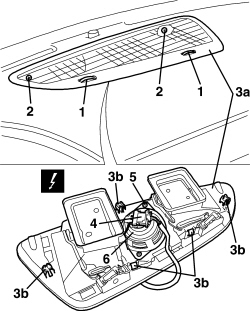

5570T52 CENTRE SPEAKER IN DASHBOARD - R.R.
- Path
- Procedures > 55 ELECTRICAL EQUIPMENT > 5570 ACCESSORIES > 5570T CAR RADIO/CAR TELEPHONE/VIDEO > 5570T52 CENTRE SPEAKER IN DASHBOARD - R.R.
- Kind
- repair procedure (removal / refitting; the operation number is the code)
- Applies to
- all engines; all production periods
- Interactive page
- https://sloeber94.github.io/elrnDB-aBrrSpdr/en/#/946004249
Applies to: all engines; all production periods
 Removing
Removing
 Refitting
Refitting1. Working in the centre of the dashboard, place the air vents in the closed air flow position.
2. Unscrew the bolts.
3. Move vent assembly (3a) slightly by releasing flexible retainers (3b).
4. Detach the electrical connection.
Description | Component |
|---|---|
CENTRAL FRONT SPEAKER |
5. Unscrew the bolts.
6. Remove the speaker.

Applies to: all engines; all production periods
Refitting
Removing- Check that the front speaker is not damaged.
- Position the speaker.
- Screw in the bolts.
- Attach the electrical connection.
- Position the vent assembly and attach the retainers.
- Screw in the bolts.
- Check that the speaker is working.